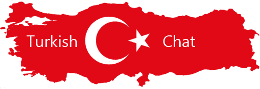
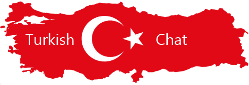

Turkish Chat

Login Turkish Chat:


Turkish Chat You can get text messages every day a bit boring. Share photos and videos while talking to a weird / random user. There is no need to register or download programs to send pictures or video clips because we allow chatting with guests. The online chat service is free for all visitors. Start chatting now and start sharing your favorite photos and videos, and make your conversation a powerful reminder for your chat buddy , Arab Turkish Chat Turkey's Chat includes Turks with Arabs and all Western countries
Turkish Chat Turkey chat is a popular chat between Turks and Arabs شات عربي تركيا ،شات تركيا الجديد هو شات يضم مستخدمين من جميع انحاء , العالم فيه المتعة والفائدة واهلا بكم معنا في شات عرب تركيا.
شات عربي شات تركيا شات تركيا صوتي "شات عربي"شات تركية هوا شات يضم من جميع الدول العربية والغربية Arabic Chat Chat includes all Arab and Western countries
شات عربي شات لكل العرب شات الاتراك شات تركيا شات كل العرب شات العربمصر الجزائر المغرب تونس ليبيا عمان قطر السعودية الامارات العراق فلسطين لبنان سوريا الاردن. Egypt Algeria Morocco Tunisia Libya Oman Qatar Saudi Arabia United Arab Emirates Palestine Palestine Lebanon Syria Jordan
شات عربي دردشة عربية شات عربي راديو شات تركيا الجديد بث حي ومباشر لقائات مع زوارنا الكرام نقاشات حيه واجمل البرامج استمع الينا الان وارسل اهدائاتك لمن تحب Radio Chat Turkey new live broadcast and direct to meet with our visitors Talks live and the most beautiful programs Listen to us now and send your gifts to whom you love
شات عربي, شات العرب هل تعلم انه بامكانك التحدث مع من تريد عبر المايك ومشاهدته عبر الكميرا في الدردشه باداء سريع وصوره تتميز بالجوده العاليه Did you know that you can chat with those who want through the mike and watch it through the camera in the chat with fast performance and image characterized by high quality
اهلا وسهلا بكم في شات تركيا يمكنك الدخول من جميع الاجهزى الكترونية شات تركيا
غرف عربية جميع الدول العربية : شات تركيا يتمنى لكم اجمل الاوقات معنا. You will be enjoying in arab chat
غرف عربية : دردشات عربية .
دردشات عربية صوت وصورة :المحادثة شات تركيا ,دردشة عربية، يقدم الموقع خدمة الدردشة
Chat is monitored by moderators and make sure that the supervisor is there to serve you and to submit complaints do not hesitate to inform the supervisor of any complaint is clear and will be at your service الدردشه مراقبه من قبل المشرفين وتاكد تماماً ان المشرف موجود لخدمتك ولتقديم الشكاوي لا تتردد بابلاغ المشرف عن اي شكوى واضحه وسيكون في خدمتك
Communicate with friends and acquaintances from different Arab countries European and American speakers in English and Arabic in various dialects. Rooms Variety and many. You can also send messages via mobile or mobile Use the chat application available for all types of mobile phones and iPads, التواصل مع الأصدقاء والمعارف من مختلف الدول العربية متحدثون أوروبيون وأمريكيون باللغتين الإنجليزية والعربية بلهجات مختلفة. غرف التنوع والكثير. يمكنك أيضا إرسال الرسائل عبر الهاتف المحمول أو المحمول استخدام تطبيق الدردشة متاح لجميع أنواع الهواتف المحمولة وأجهزة iPad
with many new people comes everyday to our Arabic chat rooms searching for maybe you to talk with and share knowledge chat Arab is the place to connect مع العديد من الأشخاص الجدد يأتون كل يوم إلى غرف الدردشة العربية التي تبحث عنها وربما تتحدث معهم وتتبادل معهم المعرفة العربية هي المكان المناسب للتواصل
أضنة (Adana) أديامان (Adıyaman) أفيون (Afyon) أغري (Ağrı) أماسيا (Amasya) أنقرة (Ankara) أنطاليا (Antalya) أرتوين (Artvin) أيطن (Aydın) بالق أسير (Balıkesir) بيله جك (Bilecik) بينكُل (Bingöl) بيطليس (Bitlis) بولو (Bolu) بوردور (Burdur) بورصة (Bursa) جاناكالي (Çanakkale) جانقري (Çankırı) جوروم (Çorum) دنيزلي (Denizli) ديار بكر (Diyarbakır) أدرنة (Edirne) إلازِغ (Elazığ) أرزينجان (Erzincan) أرضروم (Erzurum) أسكي شهر (Eskişehir) غازي عينتاب (Gaziantep) غيرسون (Giresun) كوموش خانة (Gümüşhane) حقاري (Hakkari) خطاي (Hattay)) إسبرطة (Isparta) مرسين (Mersin) إسطنبول (İstanbul) إزمير (İzmir) كارس (Kars) قسطموني (Kastamonu) قيصرية (Kayseri) كيركلاريلي (Kırklareli) قرشهر (Kırşehir) قوجه ايلي (Kocaeli)) قونية (Konya) كوتاهيا (Kütahya) ملاطية (Malatya) مانيسا (Manisa) كارامان (Kahramanmaraş) ماردين (Mardin) موغلا (Muğla) موس (Muş) نوشهر (Nevşehir) نيدا (Niğde) أردو (Ordu) ريزه (Rize) صقاريا (Sakarya) سامسون (Samsun) سيرت (Siirt) سينوب (Sinop) سيواس (Sivas) تكيرطاغ (Tekirdağ) توكات (Tokat) طرابزون (Trabzon) تونجلي (Tunceli) شانلي أورفا (Şanlıurfa) أوشاك (Uşak) وان (Van) يوزكات (Yozgat) زونغولداك (Zonguldak) أق سراي (Aksaray) بايبورت (Bayburt) قرة مان (Karaman) كيرِك قلعة (Kırıkkale) باتمان (Batman)شرناق (Şırnak) بارتين (Bartın) أرض خان (Ardahan) إغدير (Iğdır) يالوفا (Yalova) قرة بوك (Karabük) كيليس (Kilis) عثمانية (Osmaniye) دوزجه (Düzce)